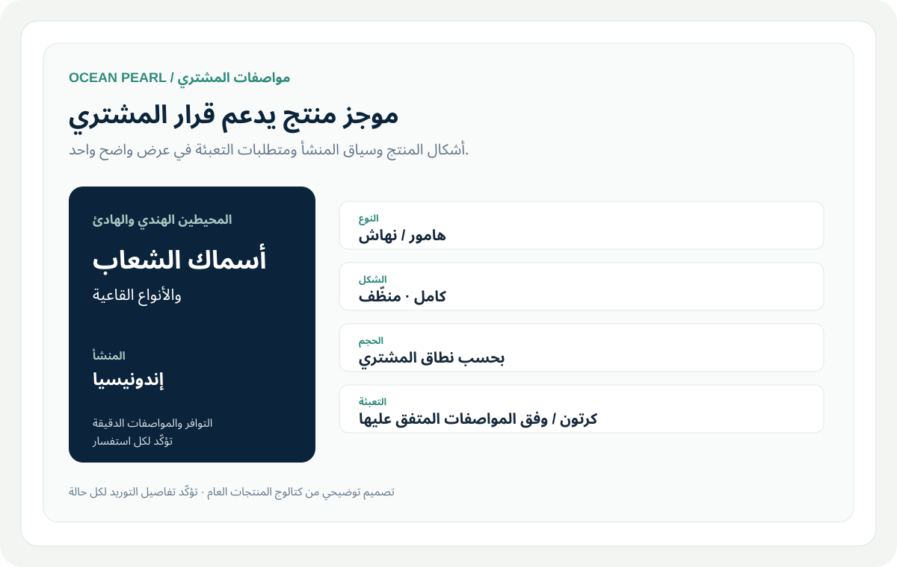
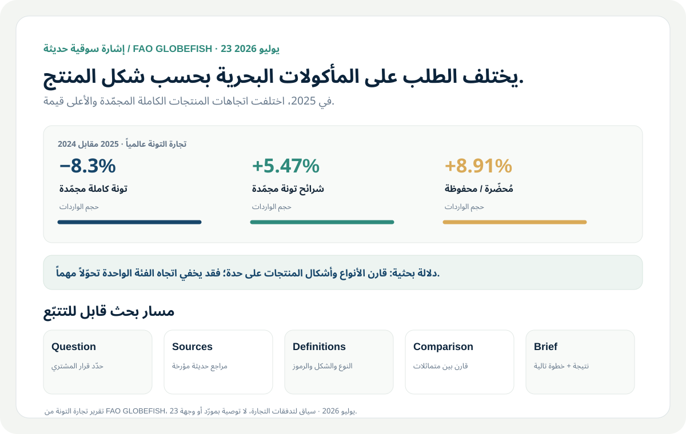
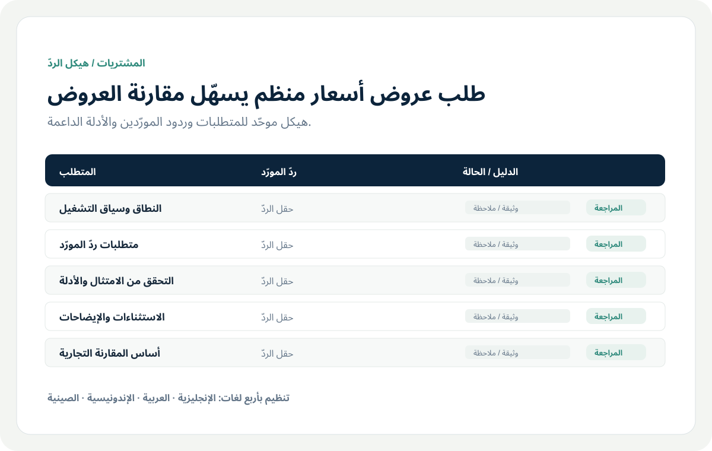
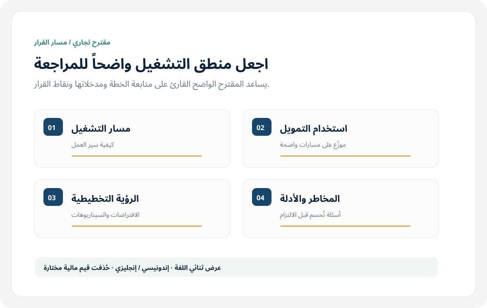
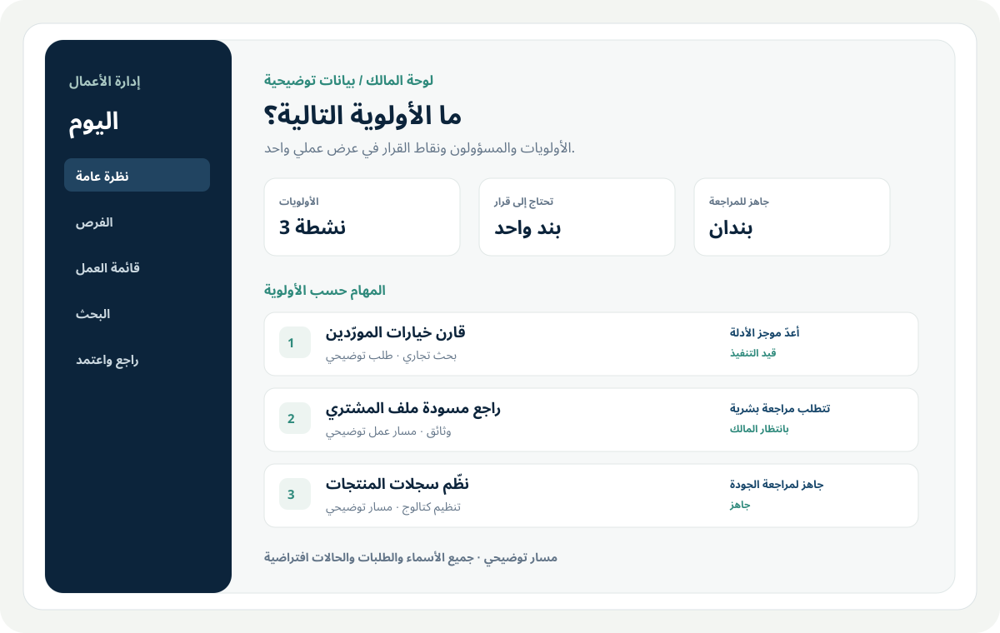
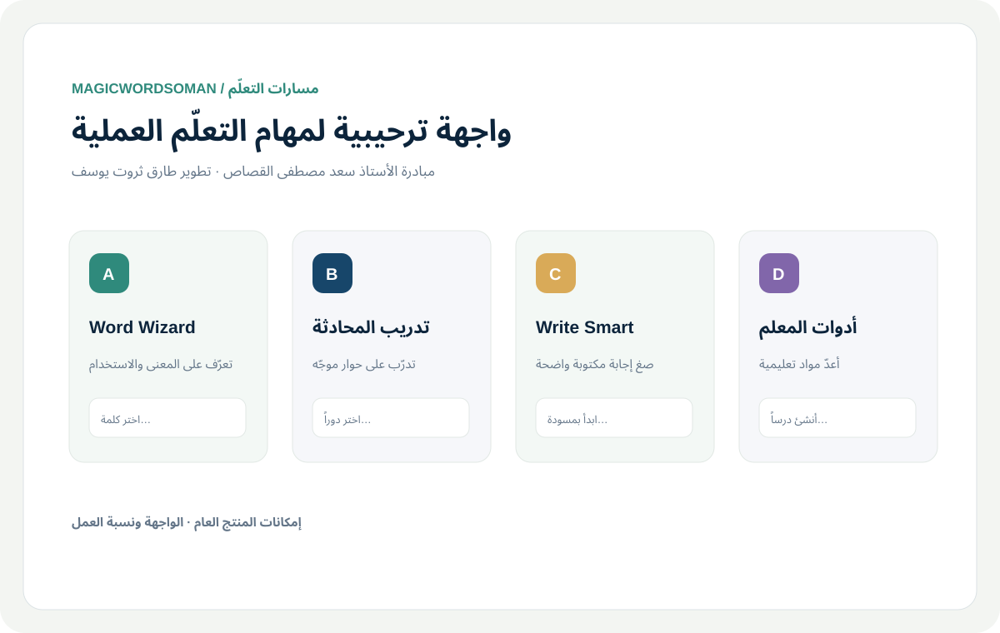

العمليات التجارية
Ocean Pearl Seafood
معلومات منتجات واضحة وسير عمل مهيأ للمشتري لتوريد المنتجات البحرية وتنسيق التصدير.
اطّلع على ما قدمته ↗ستة نماذج تشمل العمليات التجارية والبحوث الاقتصادية ووثائق المشتريات والمنتجات العملية المدعومة بالذكاء الاصطناعي.

معلومات منتجات واضحة وسير عمل مهيأ للمشتري لتوريد المنتجات البحرية وتنسيق التصدير.
اطّلع على ما قدمته ↗
حوّل المعلومات المتفرقة عن السوق إلى تحليل موثّق يدعم قراراً تجارياً حقيقياً.
اطّلع على ما قدمته ↗
يساعد الطلب المنظّم المورّدين على الإجابة عن الأسئلة نفسها بصيغة تسهّل على المشتري المقارنة.
اطّلع على ما قدمته ↗
اعرض خطة التشغيل ومنطق التمويل ونقاط القرار في مقترح ثنائي اللغة ومنسّق.
اطّلع على ما قدمته ↗
لوحة إدارة تساعد صاحب العمل على تحديد الأولوية التالية وتنسيق تنفيذها.
اطّلع على ما قدمته ↗
تجربة تعلّم عبر المتصفح تنظّم المهام المدعومة بالذكاء الاصطناعي ضمن مسارات ميسّرة للطلاب والمعلمين.
اطّلع على ما قدمته ↗